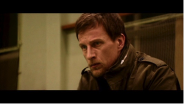
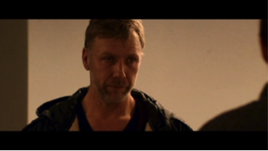
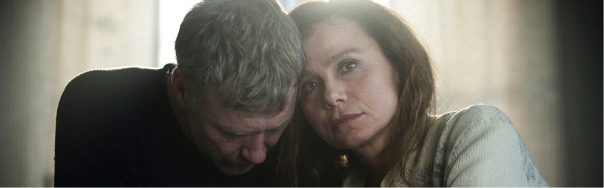
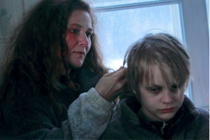
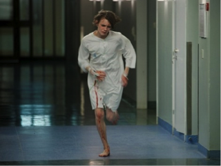
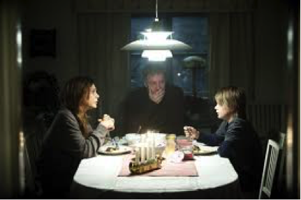

Chi legge il libro e chi guarda il film “ascolta” due storie diverse?
Maria Sole cerca di rispondere a questa domanda per noi.
L'IPNOTISTA
( “Hypnotisören”, di Lasse Hallström, con Tobias Zilliacus, Mikael Persbrandt, Lena Olin, Helena af Sandeberg, Jonatan Bökman, Oscar Pettersson, Eva Melander, Anna Azcárate, Johan Hallström, Göran Thorell, Jan Waldekranz, Emma Mehonic, Tomas Magnusson, Nadja Josephson, durata 122 min. – Svezia 2012)
Primo progetto svedese per Lasse Hallström, dopo 25 anni in USA, con pellicole anche di grande successo e molto diversificate: dallo strappalacrime “Hachiko”, al romantico “Chocolat”, al culinario “Amore, cucina e curry”. Regista non nuovo alle trasposizioni di romanzi (ne è un esempio il suo “Le regole della casa del sidro” che gli è valso una candidatura all’Oscar), si cimenta per la prima volta con un vero e proprio thriller. Come Hallström stesso ammette in varie interviste, questo non è propriamente il suo genere, ma ha comunque deciso di affrontare questa avventura perché
“questo è anche un dramma familiare, in fondo. Si tratta di due persone che non possono fidarsi l'una dell'altra, ma sono costrette a imparare a farlo per ritrovare il figlio. È un dramma familiare con elementi thriller. E c'era un buon ruolo per Lena …. (Olin, sua moglie, N.d.R.)”
DAL LIBRO AL FILM
È necessaria una premessa: se le basi da cui prende avvio la vicenda nel film sono le stesse del libro, completamente diversi sono lo sviluppo della trama e … il colpevole. No, cioè…il colpevole è sempre Lydia Evers, però è un’altra Lydia Evers…. Confusi? Anche io!
Ma andiamo con ordine.
I fan di Lars Kepler potrebbero rimanere delusi, non ritrovandosi nell’intreccio della storia. C’è da dire che sarebbe stato veramente complesso ridurre a 2 ore di film un libro di 585 pagine; pagine che, diversamente da molta letteratura scandinava, non sono tanto dedicate all’approfondimento dei personaggi, quanto a fatti e avvenimenti, all’azione vera e propria. Dunque, la scommessa di questa pellicola è stata quella di ricreare le atmosfere dei Kepler, rinunciando magari a qualche colpo di scena e a qualche finezza della trama. Lasse Hallström è affiancato per la sceneggiatura da Paolo Vacirca, che più di recente ha contribuito anche allo screen play del thriller psicologico “Abomination” (2015), inedito in Italia.
Il film inizia più o meno come il lettore ricorda: Joona che arriva sulla scena dell’omicidio di Anders Ek e poi si sposta a casa dell’uomo, dove la sua famiglia è stata massacrata. Il racconto è più lineare rispetto al libro; nel romanzo, infatti, i dettagli vengono ricostruiti piano piano da una serie di flashback o dall’analisi dei documenti relativi all’indagine. Poi il film introduce Erik Maria Bark e comincia l’alternanza delle scene relative alle indagini con quelle della crisi familiare tra Erik e Simone. Proprio come nel romanzo, i due ambienti confluiscono quando i protagonisti iniziano veramente a collaborare.
L’atmosfera risulta sufficientemente angosciante, anche grazie alle musiche e alle ambientazioni molto fredde. E fin qui, tutto bene.
A un certo punto, però, succede qualcosa e il film comincia apertamente a discostarsi dal libro; sia nelle dinamiche che nella trama.
La regia punta fortemente lo sguardo sulla crisi coniugale tra Erik e Simone e sulle motivazioni che hanno spinto Josef a tanta ferocia; motivazioni che risultano completamente diverse da quelle del libro e che porteranno lo spettatore verso lo stesso lieto fine del lettore, ma per strade che i Kepler non avevano nemmeno immaginato.
I PROTAGONISTI

Joona Linna
Tobias Zilliacus, l’attore scelto per interpretare Joona, non può certo essere definito un volto noto. Ma ha dalla sua una caratteristica molto importante: è nato a Helsinki! Dunque, come il nostro Joona, porta con sé quell’aura finnica che tanto disturba gli svedesi e un accento che identifica bene la provenienza del nostro (dettaglio ahimè riservato agli spettatori scandinavi). Per alcuni aspetti, il Joona filmico rispecchia la sua controparte cartacea: mi riferisco in particolare alla testardaggine e alla capacità di intuizione. Chiaramente, era impossibile che nel film la personalità di Joona venisse fuori come nel libro (anzi, nei libri) e quel personaggio che i lettori hanno imparato ad amare con tutte le sue fragilità, rimane un po’ schiacciato, piatto. Ma ci sta, in un film che punta soprattutto sui sentimenti e sulla trama gialla. C’è anche da dire (ma questo è un problema di regia, non di interpretazione) che ci sono degli aspetti dell’intuito di Linna che rimangono inspiegabili nel film: ad esempio, nella parte iniziale, Joona si professa convinto che il primo delitto avvenuto sia quello del padre, ma nel film non ci viene spiegato il perché, cosa un po’ spiazzante per lo spettatore ( nel libro, la ragione è legata alla conformazione delle tracce lasciate dall’assassino sui due luoghi del delitto, il che sottolinea lo spirito di osservazione del nostro Joona).

Erik Maria Bark
Mikael Persbrandt è un attore piuttosto famoso e amato dai “giallofili”, soprattutto per la sua interpretazione di Gunvald Larsson nella serie di film su Martin Beck (iconico ispettore nato dalla penna di Maj Sjöwall e Per Wahlöö), ma noto anche per il ruolo nella pellicola “In un mondo migliore” (Hævnen), che nel 2011 ha vinto l’Oscar come miglior film straniero. Quello di Erik è forse il personaggio più centrato rispetto al libro, nonostante sia del tutto tralasciata la parte del romanzo che racconta la sperimentazione di Erik nel gruppo di ipnosi (gruppo determinante per l’intreccio, in quanto il rapimento di Benjamin trova lì le sue basi). L’interprete riesce a rendere bene il profondo sconvolgimento interiore dell’ipnotista e il suo atteggiamento sia verso la moglie che verso il figlio. Ed è sufficiente una scena (quella in cui a Erik cade una boccetta di pillole) per farci capire la sua dipendenza dai farmaci; anche se per conoscerne le motivazioni avremo bisogno ancora di un po’ di tempo. Certo, dispiace che venga a mancare il suo intervento risolutivo per salvare il figlio dall’acqua gelida, delegato nel film a Joona (forse proprio per ridare al poliziotto un minimo di quell’energia che si era perso per strada).

Simone Bark
Simone è interpretata dalla splendida attrice svedese Lena Olin, nota al grande pubblico per la sua partecipazione alla serie “Alias”, ma anche ai cinefili un po’… datati, per il suo ruolo ne “L’insostenibile leggerezza dell’essere” di Philip Kaufman, che le valse il Golden Globe come attrice non protagonista nel 1989. Probabilmente anche grazie alla sensibilità di questa attrice, Simone è il personaggio che spicca su tutti, con le sue ansie, le sue paure, le sue insicurezze; la Olin riesce a donare a questa donna tutto lo spessore necessario a coinvolgere lo spettatore nel dramma che colpisce la sua famiglia.
I PERSONAGGI SECONDARI

Sui personaggi “secondari” ci sarebbero molte cose da dire; in primo luogo perché sono molti, in secondo luogo perché i loro ruoli (con l’eccezione di Josef) sono completamente stravolti rispetto al libro.
Lydia: è il personaggio che più sconvolge la memoria dei lettori. Al di là dell’interpretazione (forse un po’ sopra le righe), è proprio il personaggio in sé a essere disturbante, perché non c’è una spiegazione logica, lineare delle motivazioni che la portano al rapimento di Benjamin (nel film, dico, non nel libro…in cui tutto ha molto più senso); quando scoprono il suo nascondiglio, lei sembra convinta che Benjamin sia suo figlio, ma come è possibile, visto che continuava ad avere contatti con Josef e a guidarne le azioni? Non ha senso…o almeno è poco chiaro!
Benjamin: viene solo tratteggiato, non c’è niente del suo rapporto con Aida, della storia del tatuaggio, del bullismo, delle sue difficoltà a rapportarsi con i genitori, a capire come affrontarli, del dramma della sua prigionia. Per quanto la sintesi filmica possa spiegare dei tagli nella storia, ci sono aspetti dei personaggi che, secondo me, non andrebbero tralasciati.
Evelyn: appare e scompare in un batter d’occhio: fa solo brevi accenni alle violenze subite da Josef, ma, in questo caso, la sintesi riesce comunque a raggiungere il suo scopo, perché, con unica battuta, ci rivela la natura violenta di Josef. Certo, a me sarebbe piaciuto vedere filmata la scena in cui salva Simone e uccide suo fratello…ma, no, non sono stata accontentata.
Il gruppo di pazienti di Erik: non pervenuto!
L'APPROCCIO ALLA STORIA
Rimane ben poco del thriller psicologico che trovava le sue basi nelle dinamiche tra Erik e il suo gruppo di pazienti e quelle tra Evelyn e Josef; il problema è che rimane ben poco anche dei dubbi che nel libro vengono insinuati con i continui spostamenti dell’attenzione: dubbi su chi possa avere rapito Benjamin, dubbi sul ruolo di Evelyn nella vicenda. L’unica incertezza che riesce a insinuare il film è che Erik induca veramente falsi ricordi nei suoi pazienti (la confessione di Josef, forse per il momento in cui è collocata o forse perché riprende completamente l’immagine che se ne era fatta Joona, sembra proprio un ricordo indotto).
Le immagini degli omicidi sono molto più soft rispetto al libro: niente braccia tagliate o corpi spezzati e c’è un approccio molto… più politically correct: nessun accenno, per esempio, al morboso attaccamento sessuale di Josef nei confronti di Evelyn, o al bullismo o ai tatuaggi nazisti.

Le motivazioni del colpevole vengono svelate da una lettera recuperata sulla scena del crimine, all’inizio del film, e nello spettatore il dubbio che Josef possa essere innocente dura veramente poco; il libro, in questo senso, è molto più subdolo, costruito ad arte per tenere tutto in sospeso. Anche il montaggio non aiuta la tensione, soprattutto nella scelta di inserire la scena del rapimento di Benjamin subito dopo un’immagine di Josef ancora in coma all’ospedale: risulta subito chiaro che non può essere lui il rapitore.
Un’altra scena che crea confusione è quella in cui Simone scopre le scritte “smetti di ipnotizzare” nel suo studio: nel libro, ha senso perché il colpevole è legato alla passata attività di Erik di psicologo ipnotista, ma nel film, questo non torna, visto che Lydia non conosce nemmeno Erik.
L'AMBIENTAZIONE
Il film si apre con la ripresa aerea di una città innevata: Stoccolma, naturalmente, ma potrebbe essere qualunque altra città; sporadici alberi di natale e decorazioni ci fanno intuire che siamo nel periodo delle feste, ma questo contrasto tra l’aria natalizia e la tragicità degli eventi era forse più netto nel libro.
Dell’ambiente percepiamo soprattutto la neve e la freddezza, trasmessa anche dall’azzeccata colonna sonora di Oscar Fogelström (per la verità famoso soprattutto per le musiche di spot pubblicitari).
Ammetto che mi sono molto ritrovata nelle scene “ospedaliere”: quell’ambiente asettico e grigio è proprio come me lo immaginavo e anche le riprese dall’alto di Josef in coma sono molto evocative. Non ho apprezzato, invece, le abitazioni dei vari personaggi, troppo borghesi, troppo fighe per come me le immaginavo.
UN ULTIMO FLASH
Non è strano che un film che si professa come trasposizione cinematografica di un thriller si concluda con un colpevole diverso? Sì, secondo me, lo è; però ciò che si chiede a una trasposizione cinematografica non è tanto che sia fedele alla trama di un romanzo, quanto che ne mantenga le tematiche fondamentali. E questo film lo fa; certo non le mantiene tutte…ma alcune sì…
Per chi non conosce la trama originale, il film regge, almeno fino a poco prima del finale. E alcune scene sono anche molto belle e “drammatiche”, come il racconto degli omicidi da parte di Josef, con quella sua freddezza apparente e quel suo urlo (di disperazione o di rabbia?) in sottofondo; o i dialoghi tra Erik e sua moglie, o la scena finale, con l’autobus che affonda inesorabilmente nell’acqua gelida. Ci sono, certo, dei particolari che non tornano, ma non li svelo, così da lasciarvi con la curiosità.
Un consiglio: se non avete ancora letto il libro, guardate prima il film, altrimenti, come me, vi ritroverete nella confusione più completa…perché molti aspetti sono simili, ma non uguali…e qui torniamo al dubbio iniziale: il colpevole è lo stesso ma non è lo stesso…
Per la cronaca, era previsto un film anche del secondo romanzo della serie “L’esecutore”, la cui regia era stata affidata a Gösta Kjell Sundvall; il progetto si è però arenato…ci sarà un perché?
ALLA FINE CHI VINCE?

Penso non sia possibile fare un reale confronto tra film e libro, perché si tratta di due storie molto diverse, se non nelle atmosfere e nel nome dei personaggi. L’approccio inevitabilmente sintetico della pellicola potrà stupire (o irritare) un po’ gli amanti del libro, ma tutto sommato, ho visto di peggio… quindi credo che anche i kepleriani più accaniti possano dare una chance a questo film (io, che non posso certo considerarmi grande fan dei Kepler, sarò molto curiosa di conoscere la vostra opinione!).
Di certo mi sarei aspettata qualcosina in più sul discorso “ipnosi”, che costituisce il vero centro del romanzo, dando meno spazio, magari, alle parti “sentimentali” dell’intreccio. Per far questo, però, probabilmente, sarebbe stato necessario un regista diverso, perché Lasse Hallström, del sentimento ha fatto il suo cavallo di battaglia.
Mi rimane un dubbio atroce: alla fine, chi è Lydia?


 (di Maria Sole Bramanti)
(di Maria Sole Bramanti)